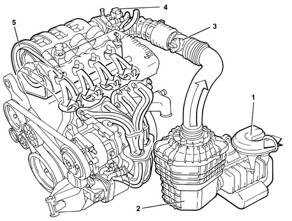
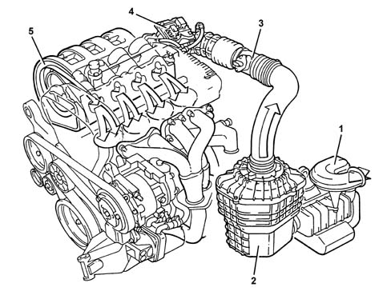
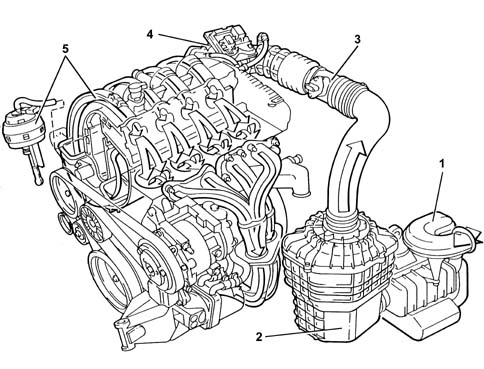
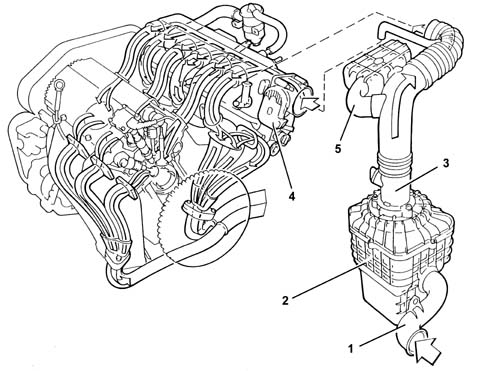
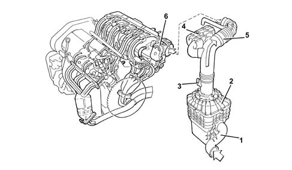
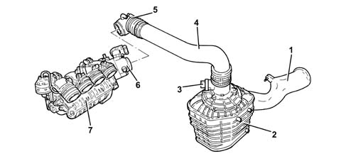

1048A vacuum air circuit
- Path
- Descriptions > 10 ENGINE > 1048 ENGINE AIR SUPPLY CIRCUIT > 1048A vacuum air circuit
- Kind
- system description
- Applies to
- engines: 1.6 TS , 1.8 TS, 2.0 JTS, 2.5 V6, 3.2 V6, 1.9 JTD 8v , 2.0 JTS, 2.4 JTD 10v; all production periods
- Interactive page
- https://sloeber94.github.io/elrnDB-a156/en/#/3232840
Applies to: engines: 1.6 TS ; all production periods
General view

1, Cold air intake with resonator 2, Complete air filter 3, Air flow meter (see See subassembly 1056 PETROL INJECTION SYSTEM ) 4, Idle speed actuator (see See subassembly 1056 PETROL INJECTION SYSTEM ) 5, Inlet manifold (see See subassembly 1072 INLET AND EXHAUST MANIFOLDS )
Applies to: engines: 1.6 TS ; all production periods
General view

1, Cold air intake with resonator 2, Complete air filter 3, Air flow meter (see See subassembly 1056 PETROL INJECTION SYSTEM ) 4, Throttle valve integrated with M.D.S. (see See subassembly 1056 PETROL INJECTION SYSTEM ) 5, Inlet manifold (see See subassembly 1072 INLET AND EXHAUST MANIFOLDS )
Applies to: engines: 1.8 TS; all production periods
General view

1, Cold air intake with resonator 2, Complete air filter 3, Air flow meter (see See subassembly 1056 PETROL INJECTION SYSTEM ) 4, Throttle body integrated with M.D.S. (see See subassembly 1056 PETROL INJECTION SYSTEM ) 5, Modular inlet manifold (see See subassembly 1072 INLET AND EXHAUST MANIFOLDS )
Applies to: engines: 2.5 V6; all production periods
General view

1, Cold air intake for air filter 2, Complete air filter 3, Air flow meter 4, throttle body actuator 5, Resonator
Applies to: engines: 3.2 V6; all production periods
OPERATION
General view

1 - Cold air intake for air filter 2 - Complete air filter 3 - Air flow meter 4 - Resonator 5 - Corrugated hose 6 - Throttle casing with D.V.L. Characteristic of working principle 1056B multi-point injection system (mpi)
Applies to: engines: 1.9 JTD 8v , 2.4 JTD 10v; all production periods
Applies to: engines: 2.0 JTS, 2.0 JTS; all production periods
OPERATION
VIEW OF ASSEMBLY

1 - Cold air intake 2 - Complete air filter 3 - Air flow meter Characteristic of working principle 1056F DIRECT PETROL INJECTION SYSTEM 4 - Rigid pipe 5 - Corrugated hose 6 - Throttle casing with D.V.L. Characteristic of working principle 1056F DIRECT PETROL INJECTION SYSTEM 7 - Modular intake manifold Characteristic of working principle 1072D modular inlet manifold (v.i.s.)